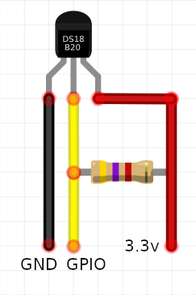
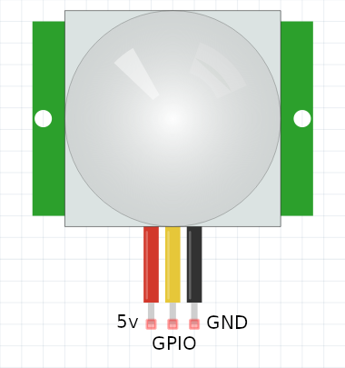
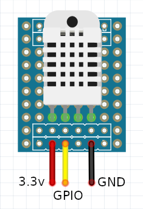

<md-dialog aria-label="Update sensor dialog" flex="50">

    <form ng-cloak>

        <md-toolbar>
            <div class="md-toolbar-tools">
                <h2>Update sensor</h2>
                <span flex></span>
                <md-button class="md-icon-button" ng-click="sensorsCtl.cancelDialog()" aria-label="Close dialog">
                    <md-icon md-svg-icon="close"></md-icon>
                </md-button>
            </div>
        </md-toolbar>

        <md-dialog-content layout-padding>
        <div class="md-dialog-content">

            <div layout="row" layout-align="start center">

                <div flex="50">
                    <!-- sensor name -->
                    <md-input-container class="md-block" flex-gt-sm>
                        <label>Name</label>
                        <input ng-model="sensorsCtl.name">
                    </md-input-container>

                    <!-- sensor type -->
                    <md-input-container class="md-block" flex-gt-sm>
                        <label>Type</label>
                        <md-select ng-model="sensorsCtl.type" ng-disabled="true">
                            <md-option ng-repeat="type in sensorsCtl.types" ng-value="type.value">{{type.label}}</md-option>
                        </md-select>
                    </md-input-container>
                </div>

                <div flex="50" style="text-align:center;">
                    <!-- sensor image -->
                    
                    
                    
                </div>

            </div>

            <div ng-if="sensorsCtl.type.subtype!==sensorsCtl.SUBTYPE_ONEWIRE">
                <!-- gpio configuration -->
                <div gpios-pins-config readonly="true" selected-gpios="sensorsCtl.selectedGpios"></div>
            </div>

            <!-- motion parameters -->
            <div ng-if="sensorsCtl.type.type===sensorsCtl.TYPE_MOTION && sensorsCtl.type.subtype===sensorsCtl.SUBTYPE_GENERIC">
                <md-input-container class="md-block" flex-gt-sm>
                    <md-checkbox ng-model="sensorsCtl.inverted" aria-label="Revert state">
                        State is inverted?
                    </md-checkbox>
                </md-input-container>
            </div>

            <!-- temperature parameters -->
            <div ng-if="sensorsCtl.type.type===sensorsCtl.TYPE_TEMPERATURE || sensorsCtl.type.subtype===sensorsCtl.SUBTYPE_DHT22">

                <div layout-gt-sm="row">
                    <md-input-container class="md-block" flex-gt-sm>
                        <label>Interval</label>
                        <md-select ng-model="sensorsCtl.interval">
                            <md-option ng-repeat="interval in sensorsCtl.intervals" ng-value="interval.value">{{interval.label}}</md-option>
                        </md-select>
                    </md-input-container>
                    <md-input-container class="md-block" flex-gt-sm>
                        <label>Temperature offset</label>
                        <input type="number" min="0" ng-model="sensorsCtl.offset">
                    </md-input-container>
                    <md-input-container class="md-block" flex-gt-sm>
                        <label>Temperature offset type</label>
                        <md-select ng-model="sensorsCtl.offsetUnit">
                            <md-option ng-repeat="offset in sensorsCtl.offsetUnits" ng-value="offset.value">{{offset.label}}</md-option>
                        </md-select>
                    </md-input-container>
                </div>

            </div>

        </div>
        </md-dialog-content>

        <md-dialog-actions layout="row">
            <span flex></span>
            <md-button ng-click="sensorsCtl.closeDialog()" aria-label="Close dialog">
                <span>Update</span>
            </md-button>
        </md-dialog-actions>

    </form>

</md-dialog>

